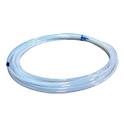
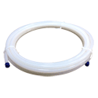

Tubing
Harrington is a Supplier of high quality tubing. Tubing is used in many applications, including food prep, structural support, liquid transportation, and other uses. Material types include PVC, Non-Phthalate PVC, Polyethylene, and Polyurethane. Select your product to request a quote, get additional information and purchasing options.

Altaflo PTFE0806-50 1/2" OD x 3/8" ID x 0.062" Wall ALTAFLUOR® 100 Series Natural PTFE Tubing, 50' Coilper FT · Sign in for price- Altaflo PTFE0807 1/2" OD x 7/16" ID x 0.030" Wall ALTAFLUOR® 100 Series Natural PTFE Tubing, 1' Lengthper FT · Sign in for price
- Altaflo PTFE0907 9/16" OD x 7/16" ID x 0.0625" Wall ALTAFLUOR® 100 Series Natural PTFE Tubing, 1' Lengthper FT · Sign in for price
- Altaflo PTFE0908 9/16" OD x 1/2" ID x 0.0313" Wall ALTAFLUOR® 100 Series Natural PTFE Tubing, 1' Lengthper FT · Sign in for price
- Altaflo PTFE1008 5/8" OD x 1/2" ID x 0.0625" Wall ALTAFLUOR® 100 Series Natural PTFE Tubing, 1' Lengthper FT · Sign in for price
- Altaflo PTFE1009 5/8" OD x 9/16" ID x 0.0313" Wall ALTAFLUOR® 100 Series Natural PTFE Tubing, 1' Lengthper FT · Sign in for price
- Altaflo PTFE1211 3/4" OD x 11/16" ID x 0.0313" Wall ALTAFLUOR® 100 Series Natural PTFE Tubing, 1' Lengthper FT · Sign in for price
- Altaflo PTFE1609 5/32" OD x 3/32" ID x 0.0313" Wall ALTAFLUOR® 100 Series Natural PTFE Tubing, 1' Lengthper FT · Sign in for price

Altaflo PVDF0201 1/8" OD x 1/16" ID x 0.030" Wall ALTAFLUOR® 550 Series Natural Kynar Flex® PVDF Tubing, 1' Lengthper FT · Sign in for price- Altaflo PVDF0302 3/16" OD x 1/8" ID x 0.030" Wall ALTAFLUOR® 550 Series Natural Kynar Flex® PVDF Tubing, 1' Lengthper FT · Sign in for price
- Altaflo PVDF0402 1/4" OD x 1/8" ID x 0.062" Wall ALTAFLUOR® 550 Series Natural Kynar Flex® PVDF Tubing, 1' Lengthper FT · Sign in for price
- Altaflo PVDF0402-100 1/4" OD x 1/8" ID x 0.062" Wall ALTAFLUOR® 550 Series Natural Kynar Flex® PVDF Tubing, 100' Coilper FT · Sign in for price
- Altaflo PVDF0402-25 1/4" OD x 1/8" ID x 0.062" Wall ALTAFLUOR® 550 Series Natural Kynar Flex® PVDF Tubing, 25' Coilper FT · Sign in for price
- Altaflo PVDF0402-50 1/4" OD x 1/8" ID x 0.062" Wall ALTAFLUOR® 550 Series Natural Kynar Flex® PVDF Tubing, 50' Coilper FT · Sign in for price
- Altaflo PVDF0403 1/4" OD x 3/16" ID x 0.030" Wall ALTAFLUOR® 550 Series Natural Kynar Flex® PVDF Tubing, 1' Lengthper FT · Sign in for price
- Altaflo PVDF0403-1000 1/4" OD x 3/16" ID x 0.030" Wall ALTAFLUOR® 550 Series Natural Kynar Flex® PVDF Tubing, 1000' Coilper FT · Sign in for price
- Altaflo PVDF0416 1/4" OD x 5/32" ID x 0.047" Wall ALTAFLUOR® 550 Series Natural Kynar Flex® PVDF Tubing, 1' Lengthper FT · Sign in for price
- Altaflo PVDF0417 1/4" OD x 0.170" ID x 0.040" Wall ALTAFLUOR® 550 Series Natural Kynar Flex® PVDF Tubing, 1' Lengthper FT · Sign in for price
- 5/16" O.D., Natural PVDF Tubingper FT · Sign in for price
- Altaflo PVDF0504 5/16" OD x 3/16" ID x 0.062" Wall ALTAFLUOR® 550 Series Natural Kynar Flex® PVDF Tubing, 1' Lengthper FT · Sign in for price
- Altaflo PVDF0604 3/8" OD x 1/4" ID x 0.062" Wall ALTAFLUOR® 550 Series Natural Kynar Flex® PVDF Tubing, 1' Lengthper FT · Sign in for price
- Altaflo PVDF0604-100 3/8" OD x 1/4" ID x 0.062" Wall ALTAFLUOR® 550 Series Natural Kynar Flex® PVDF Tubing, 100' Coilper FT · Sign in for price
- Altaflo PVDF0604-25 3/8" OD x 1/4" ID x 0.062" Wall ALTAFLUOR® 550 Series Natural Kynar Flex® PVDF Tubing, 25' Coilper FT · Sign in for price
- Altaflo PVDF0604-50 3/8" OD x 1/4" ID x 0.062" Wall ALTAFLUOR® 550 Series Natural Kynar Flex® PVDF Tubing, 50' Coilper FT · Sign in for price
- Altaflo PVDF0605 3/8" OD x 5/16" ID x 0.030" Wall ALTAFLUOR® 550 Series Natural Kynar Flex® PVDF Tubing, 1' Lengthper FT · Sign in for price
- Altaflo PVDF0705 7/16" OD x 5/16" ID x 0.062" Wall ALTAFLUOR® 550 Series Natural Kynar Flex® PVDF Tubing, 1' Lengthper FT · Sign in for price
- Altaflo PVDF0806 1/2" OD x 3/8" ID x 0.062" Wall ALTAFLUOR® 550 Series Natural Kynar Flex® PVDF Tubing, 1' Lengthper FT · Sign in for price
- Altaflo PVDF0806-100 1/2" OD x 3/8" ID x 0.062" Wall ALTAFLUOR® 550 Series Natural Kynar Flex® PVDF Tubing, 100' Coilper FT · Sign in for price
- Altaflo PVDF0806-25 1/2" OD x 3/8" ID x 0.062" Wall ALTAFLUOR® 550 Series Natural Kynar Flex® PVDF Tubing, 25' Coilper FT · Sign in for price
- Altaflo PVDF0806-50 1/2" OD x 3/8" ID x 0.062" Wall ALTAFLUOR® 550 Series Natural Kynar Flex® PVDF Tubing, 50' Coilper FT · Sign in for price
- Altaflo PVDF0807 1/2" OD x 7/16" ID x 0.030" Wall ALTAFLUOR® 550 Series Natural Kynar Flex® PVDF Tubing, 1' Lengthper FT · Sign in for price
- Altaflo PVDF1008 5/8" OD x 1/2" ID x 0.062" Wall ALTAFLUOR® 550 Series Natural Kynar Flex® PVDF Tubing, 1' Lengthper FT · Sign in for price
- Altaflo PVDF1210 3/4" OD x 5/8" ID x 0.062" Wall ALTAFLUOR® 550 Series Natural Kynar Flex® PVDF Tubing, 1' Lengthper FT · Sign in for price
- Altaflo PVDF1412 7/8" OD x 3/4" ID x 0.062" Wall ALTAFLUOR® 550 Series Natural Kynar Flex® PVDF Tubing, 1' Lengthper FT · Sign in for price
- Altaflo PVDF1614 1" OD x 7/8" ID x 0.062" Wall ALTAFLUOR® 550 Series Natural Kynar Flex® PVDF Tubing, 1' Lengthper FT · Sign in for price
- Altaflo PVDF1614-500 1" OD x 7/8" ID x 0.062" Wall ALTAFLUOR® 550 Series Natural Kynar Flex® PVDF Tubing, 500' Coilper FT · Sign in for price
 1"ODx.875"ID TUBING HP PFA 450per FT · Sign in for price
1"ODx.875"ID TUBING HP PFA 450per FT · Sign in for price